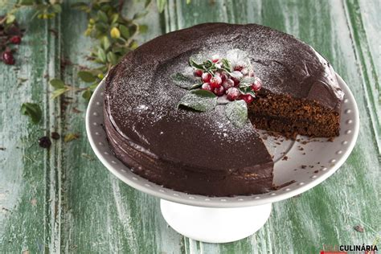

Chef de cozinha renomado, famoso pela sua postura firme e jeito pouco gentil de lidar com as pessoas, Fogaça é um sujeito interessante para se conhecer... No mais, eu gostaria de apreciar a última das refeições com alguém que pudesse me indicar novas experiências gastronômicas.
| Ingredientes | Quantidade |
|---|---|
| ovos | 6 unid. |
| farinha de trigo | 200g |
| açúcar | 250g |
| chocolate em pó | 60g |
| manteiga | 50g |
| fermento | 1 clr de chá |
| Ingredientes p/ creme de chocolate | Quantidade |
|---|---|
| chocolate em tabletes | 300g |
| manteiga | 1 clr de sopa |
| creme de leite | 100ml |
| leite | 100ml |
| manteiga | 50g |
| Folhado rendilhado para decoração | -- |
Passo 1
Ligue o forno a temperatura de 180º. Unte uma forma com manteiga e polvilhe com farinha. Bata os ovos até ficarem em espuma, adicione o açúcar e bata mais um pouco até obter um preparado fofo.
Passo 2
Peneire a farinha com o chocolate e o fermento e envolva no creme de ovos, alternando com a manteiga.
Passo 3
Despeje a massa na forma e leve ao forno durante 40 minutos. Desenforme sobre uma rede de cozinha e deixe esfriar.
Passo 4
Prepare o creme. Junte o chocolate com a manteiga, o creme de leite, o leite e leve ao fogo, em banho maria, mexendo sempre até obter um creme homogêneo.
Passo 5
Retire do calor e deixe esfriar um pouco. Corte o bolo ao meio e recheie uma das partes com um pouco de creme de chocolate.
Passo 6
Sobreponha a outra, cubra com o restante do creme de deixe escorrer.
Passo 6
Transfira para um prato de servir e decore com o folhado rendilhado.
Passo 6
Bom Apetite!
